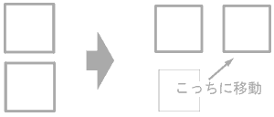
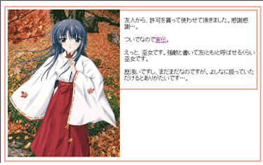
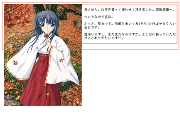
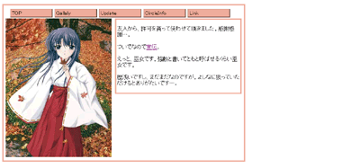
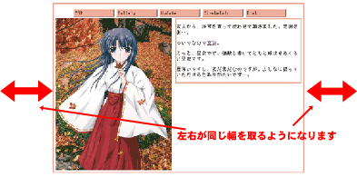

という訳で、配置方法その２。
正直、これは、複数の要素に使い始めると、とたんに直感的でなくなるので、要素の順番と処理を、頭の中でイメージしながら使えるようにならないといけません
うまく使えば、結構これだけでも色々作れます。例えば、2chでお知恵を借りたのですが対話型のテキストサイトのサンプルソースです
出しておいて何ですが、これの解説は後回しにさせて頂いて、今回の目標であるCGサイトデザインの作成法です
今回主のお世話になるfloatですが、結局は
という感じに、ボックスの横に、モノを表示させるためのもので、画像なんかの横に説明文を表示させるために使用するのが普通の使い方だと思うのですが、その他で使用できる方法を紹介させていただきます
とりあえず完成目標を出させて頂きますが、出来はそんな感じで、サイトのメニューが書かれた横方向のリストを作る方法です。
ソースはこんな感じ
<ul id="nav">
<li>TOP</li>
<li>Gallaly</li>
<li>Update</li>
<li>CircleInfo</li>
<li>Link</li>
</ul>
tableでは無くて、横方向のリストですね。何も設定していないときは、サンプル３の様に表示されますが、メニューのリストは"リスト"なんですから、こちらで書く方が正しかったりします。
これを順番に書き換えていきますが、まずは
ul#nav {
list-style-type:none; /* 邪魔な黒丸を消します */
}
ul#nav li{
/* 表示したいサイズに幅を調整します */
margin:0.2em;
padding:0.1em 0.2em;
}
と書いて、無駄な物を消します
これにさらに
ul#nav li{
/* 表示したいサイズに幅を調整します */
margin:0.2em;
padding:0.1em 0.2em;
/* デザインの調整 */
width:8em;
border-style:outset;
border-width:2px;
background-color:#ded;
border-color:#ded;
}
と継ぎ足、デザインを微調整して、サンプル５の様にします
最後にリストを横に並べるためにfloatを追加して
ul#nav li{
/* 表示したいサイズに幅を調整します */
margin:0.2em;
padding:0.1em 0.2em;
/* デザインの調整 */
width:8em;
border-style:outset;
border-width:2px;
background-color:#ded;
border-color:#ded;
/* リストを横方向に調整する */
float:left;
}
とすると、目的通りに作られます
今回はCGサイト等で良く使われている、左にTOP絵、右に説明文等を書いているデザインです完成目標はこんな感じでしょうか…。
スタイルを何も指定しないとサンプル７の様に表示がされますが、これを順次変更していきます
まずはTOP絵のサイズを固定して、後々の面倒ごとを回避します
div#top-image {
width:330px;
}
div#top-image img{
/* top絵の大きさを決めておきます */
width:320px;
height:420px;
}
で、お約束のfloatを使って、テキストを右側に移動させます
div#top-image {
width:330px;
float:left; /* 日記の空間を右に移動させます */
}
div#top-image img{
/* top絵の大きさを決めておきます */
width:320px;
height:420px;
}
出来たのがサンプル８になります。右側に移動しているのが分かって頂けるでしょうか？
最後に、色の設定を行います。下の様にボーダーの太さや、色の設定のスタイルシートを追加します
div#content,
#diary {
border-color:#ea9;
}
div#content {
width:70%;
border-width:medium;
border-style:solid;
padding:0.4em;
}
div#diary {
border-style:solid;
}
できたのがサンプル９、あれ？でも表示が少し変じゃありませんか？
プレビューを作ると
| IE | Mozilla |
|  |  |
なーんか、Mozillaだと画像がボックスからはみ出していますね(Operaでもこうなりますが)。規格的には実はコレで正しかったりするので、これを意図通りに表示できるようにHTMLの方をいじります。
スタイルシートに以下の様に設定を追加して
br.clear {
clear:both;
}
divタグの最後の所に以下の様にタグを追加します
<div id="content">
<div id="top-image">
<img src="img/top_img.jpg" alt="top絵" />
</div>
<div id="diary">
<p>友人から、許可を貰って使わせて頂きました。感謝感謝…。</p>
<p>ついでなので<a href="http://www1.ocn.ne.jp/~miko3/">宣伝</a>。</p>
<p>えっと、巫女です。強敵と書いてともと呼ばせるくらい巫女です。</p>
<p>歴浅いですし、まだまだなのですが。よしなに扱っていただけるとありがたいです…。</p>
</div>
<br class="clear" />
</div>
これで、top絵がボーダーの中に表示されます
最後に右側の紹介文のボーダーが画像に引っかかっているので
div#diary {
margin-left:330px;
}
を追加して完成です。
とまぁ、長い解説を終えましたが、話の本題です。CG系サイトにあるtop絵とメニューを組み合わせたデザイン。もう気づいていると思われますが、さっき作った２つを組み合わせます。
ちなみに作ってみるとサンプル１０の様になるのですが、これ…、出来れば画面の中心に映るようにしたいですよね。
そこで以下の様にスタイルシートを追加します。
#content {
margin:auto;
}
出来たのがサンプル１１、ここちょっとブラウザごとに表示の違いが出ますので表示
| IE | Mozilla |
|  |  |
Mozilla、Operaではこれでセンタリングされるのですが、IEではできません(CSS2で定められている方法で、規格的に比較的新しいので文句は言いませんが)。そこで、回避手段として下のように追記します。
body {
text-align:center; /* ボックスをセンタリング */
}
#content {
margin:auto;
text-align:left; /* 下の要素までセンタリングされないように、設定を元に戻す */
}
これで完成です。